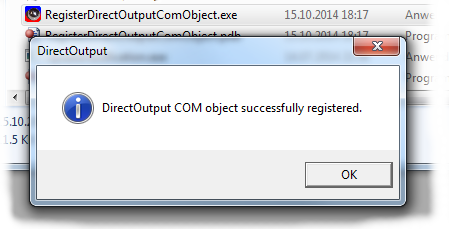
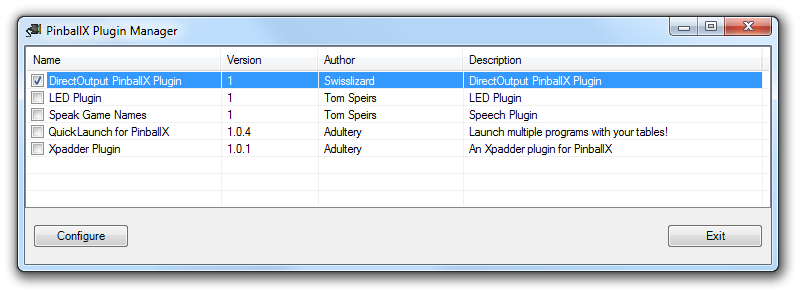
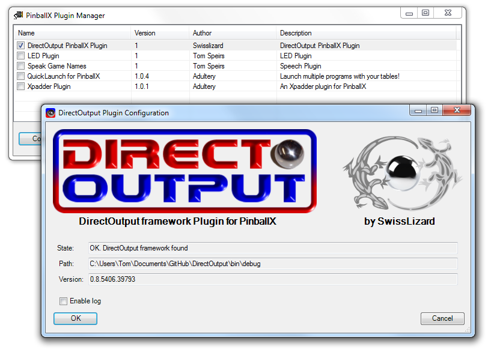

Introduction
DirectOutput does also support PinballX if you use the Pinballx DirectOuput Plugin. If this plugin is used, DOF will receive information from PBX for different events and states in PBX as well as information on the table which is currently selected in PBX. The effects for Pinballx are configured in the ini files from the config tool or alternatively in a xml file.
Since PinballX does not deal with ROM names natively, the PBX plugin uses fuzzy text matching to convert the table names to the Rom Names used in the DOF configs. This process is not 100% percent reliable, which means that wrong rom names can be detected or that a rom is not detected at all. The closer the table decription of PBX resembles the table name in the DOF config tool resp. in the tablemappings.xml the easier it is to detect the correct rom from the table descriptions in the PBX configs.
Setup
Prerequisites:
- The DirectOutput framework must be installed, configured and working.
- PinballX must be installed, configured and working.
Installing step by step:
- Open the directory where the DirectOutput framework is installed.
- From the DOF directory, execute the RegisterDirectOutputComObject.exe to register the COM-object of DOF.

- Open the plugin directory of Pinballx (typically c:\PinballX\plugins) in another window.
- Copy the file DirectOutput PinballX Plugin.dll from the DOF directory to the PinballX plugin directory.
- Start the PinballX Pluin Manager and activate the DirectOutput Plugin by activating the checkbox in front of the plugin name.

- After activating the plugin, select the line of the DOF plugin in the manager and click the configure button which will open the config window of the plugin. Check if the plugin can detect DOF and if you want turn on the logging for the plugin (DOF log is as usual controlled by the global config).

- Download some suitable config files from the config tool over at: ConfigTool Website and put those configs in the config folder of DOF.
- Important: If you use a GlobalConfig files for your DOF installation, please create another GlobalConfig file for PinballX. This global config file must be named GlobalConfig_PinballX.xml. It is recommended that you use the GlobalConfig editor tool in the DOF directory to create this file.
Ini File Parameters
If ini files are used for the config of PinballX effects, the ini files just need one extra line for a table named PinballX.
All parameters which are mentioned in the document on Ini-Files can be used for the config of effects for PBX. However, since PBX does not have numbered table elements, named table elements have to be used instead to trigger the effects.
At this time the following named table elements are supported by PBX:
- $PBXWheel is active (value 1) if the PBX selection wheel is displayed.
- $PBXMenu is active (value 1) if a PBX menu (e.g. table menu or exit menu) is displayed.
- $PBXScreenSaver is active (value 1) while PBX is in attract mode.
- $PBXGameSelect indicates that the selected game in the PBX wheel display has changed.
- $PBXQuit indicates that the user has pressed the exit key while the wheel is displayed.
- $PBXWheelLeft indicates that the wheel rotates to the left.
- $PBXWheelRight indicates that the wheel rotates to the right.
- $PBXWheelPageLeft indicates that the wheel pages to the right.
- $PBXWheelPageRight indicates that the wheel pages to the left.
- $PBXMenuOpen fires when PBX opens the menu.
- $PBXInstructions fires when PBX opens the instructions for a table.
- $PBXMenuQuit fires when PBX exits a menu. Attention! This occurs only if the user exits the menu directly, it does not fire on other ways to exit the menu, e.g. after a table flyer has been displayed.
- $PBXMenuUp fires when the selection in the menu is moving one line up.
- $PBXMenuDown fires when the selection in the menu goes one line down.
- $PBXMenuSelect fires when a menu entry is selected.
- $PBXScreenSaverStart fires when the attract modes starts.
- $PBXScreenSaverQuit fires when the attract mode ends.
- $RomName. PinballX tries to evaluate the romname of the currently selected table and forwards that romname prefixed with $ to DOF (e.g. Medival Maddness=Romname mm, DOF will receive $mm).
Appart from using these special trigger parameters all other settings for effects work the same as they do in any other DOF config.
Examples:
- $PBXWheelRight 120 defined for a solenoid will fire the solenoid for 120ms when the wheel rotates to the right.
- $PBXMenu Blue defined for a rgb led will set this led to blue while a menu is displayed.
- $PBXGameSelect Green 300 3 defined for a rgb led will generate 3 green flashes within 300ms when another game is selected using the whell.
- $mm Red defined for a rgb led will set that led to red as long as Mediveal Madness (mm) is selected in PBX.

 1.14.0
1.14.0